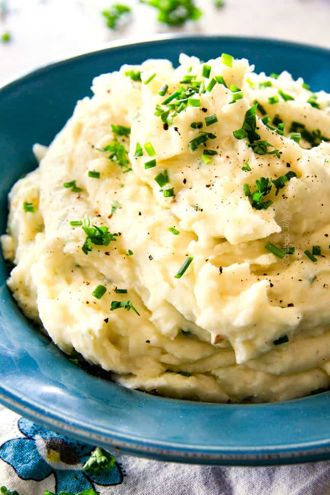

Poh-Tay-Toes

When I was a small lad growing up on the emerald isle, my grandmother showed me the perfect taters recipe.
Please join me on this culinary journey through taters, butter, and milk, as we whip up something scrumptious!
mmm-MMM so good and tasty! mmmmmMMMMmmmMMMMMM!
Ingredients
- Potatoes
- Garlic
- Salt and pepper
- Unsalted butter
- Heavy whipping cream
- Strong upper body (preferably forearms, for hwipping)
Recipe
- Place the potatoes and garlic in a large pot and cover with cold water by 1 inch. Season the water with a tablespoon of salt.
- Bring the water to a boil over high heat, then reduce the heat to medium and gently boil for 15 to 20 minutes, or until the potatoes are fork-tender. Drain and return to the pot.
- Begin to mash the potatoes and garlic with a potato masher. When they are partially mashed, add the butter, milk, salt, and several grinds of pepper.
Continuing mashing until the potatoes reach your desired consistency (we like them totally smooth), then use a spatula or wooden spoon to fold in the sour cream, if using.
- Season to taste and serve topped with butter and chives